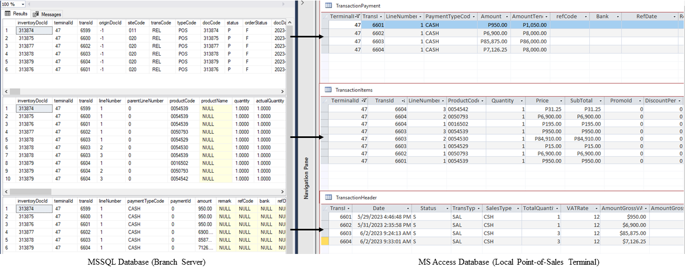

Presentation of Output
Migration of VB6 Report Modules to C#
The output of this task is to recreate two (2) Barter 8 report modules currently written in VB6 into C# and document the process of creation. This is because Patrick's supervisor wants to create all future Bater8 modules to be written in C#. The document output will then be used by developers in the future as a guide or sample when writing new functionality in C#. Shown below are the two report modules recreated. The POS Sales Journal Summary is the simpler form done as practice while the POS Collections Report is the more complex form with more filters and functionality.

The POS Sales Journal Summary has filters such as picking the site from which to select terminals by clicking on “Change Site”, the from and to dates for the range of dates of the records, the type of transaction being: sales, returns, void, or all types, a filter for a specific terminal or all of the terminals, and arrange by transaction, OR, or invoice number. These filters will then be used for the query to get the desired transaction records.


Next, the POS collections report shown above is similar in that it also has a filter to select a specific site in which terminals to include, to and from dates of the sales transaction. Its difference from the first report form is that this only includes sales transactions, has a filter for the payment types to show, and has a group by filter with group by terminal, cashier, payment type, and site. The group by filter all has different queries which added to the complexity of this report for implementing it into printable reports and export to Excel.
The data entered into these filters are then used in complex SQL queries which were from adopted from the original VB6 forms using SQL Server Profiler in order to capture the queries. These queries involve getting data from multiple tables and their respective relationships.
Both of these reports have the functionality of generating printable reports by clicking on the “Preview” or “Print Preview” link labels. Patrick used SAP Crystal Reports in order to generate printable reports. Each of the reports has a corresponding crystal report form as the data structure to be used in a crystal report form needs to be defined beforehand. A sample of the printable report can be seen above.
The difference between the two reports modules is that the POS collections report module has an export to Excel functionality. Patrickused the Interop microsoft office library to be able to interface with Microsoft Excel. Transaction records are iteratively written into an Excel file. Patrick used the cell’s address or reference to specify where to write a specific value or field. A sample of the export to Excel functionality can be seen in the picture below.

After the development of the two report modules, Patrick created its technical documentation. The photo below shows a sample of the technical documentation created by Patrick which is intended to be used by future developers as a guide. It includes information such as the tools used, setting up the project, the project structure, as well as a specific discussion on how each part of the functionality was created namely the data models, the startup parameters, retrieving and saving data to the registry, crystal reports, and exporting to excel.
Point-of-Sales Monitoring Module
Next, Patrick was tasked to create new modules that will help with the current problems of the system. First, he created a module to monitor the point-of-Sales terminals. This was created in order for a supervisor to be able to monitor terminals in a single view and check if there are problems so that it can quickly be resolved.
The photo shows the monitoring dashboard. Its default behavior upon opening is showing only the online POS terminals, it also has options of showing the offline terminals under the options tab. Terminals are asynchronously pinged through the LAN connection using their terminal names, and if they reply, it means they are online. Terminal statuses are refreshed every 60 seconds (1 minute) with a timer shown at the top right. A user is also able to manually refresh the status of the terminals in the options tab without waiting for the automatic refresh timer.
The monitoring dashboard also includes data such as the cashier logged in, the number of unsent transactions which means the difference between the count of the records found in the branch server versus in the local database of the terminal, and a summary of the sales, returns, and voided transactions of a specific terminal.
The photo below shows the viewing of all transactions for that day per terminal. This was created as he was tasked by the supervisor as a challenge and an exercise to add a functionality that he thinks is beneficial and helpful for the user of this module.
Patrick thought that since there is a summary of transactions, there should be a way of viewing all the transactions of a specific terminal for that day. This functionality also includes searching records by transaction number, transaction type, status, cashier name, or amount.
The functionality of the POS monitoring module also includes authorizing requests that need supervisor credentials. This allows supervisors to give authorization without having to go to the actual terminal. This works by the terminal sending a request to the branch server, the branch server which the monitoring module is running on in the backend is then notified of this request. The supervisor is notified by highlighting the terminal color yellow and playing a sound. To authorize the request, the user must click on the terminal and enter their supervisor's user code and password. These credentials are then sent to the terminal to be processed and used to authorize the request (see photo below).
After the development of the monitoring module, Patrick created its technical documentation. The document below shows a sample of the technical documentation created by him. It includes information such as an overview of the module functionality, the tools used, setting up the project, the project structure, as well as a specific discussion on how each part of the functionality was created namely the data models, getting and pinging the terminals, refreshing the terminal status, getting transaction data, and the authorization of the supervisor and their credentials.
Point-of-Sales Auto Updater Module
Currently, updates on Barter 8 point-of-sales terminals are manually installed by accessing the terminals one by one remotely and changing the program files and folders. According to his supervisor, this can take around 5 to 10 minutes per terminal depending on the size of the update. In a hypothetical situation of 10 sites with 10 terminals, the software support team would need to remotely access 100 terminals per software update. Although this is a legacy system and updates are not that often, this manual operation is tedious and is prone to human errors.
The main problem that the point-of-sales auto-updater module developed by Patrick solves is to check if there are software updates from the branch server. If updates are present, it then automatically updates its files and folders, while also creating backups of the overwritten files. These backups can then be used as restore or rollback points as needed. The point-of-sales auto-updater module developed by Patrick removes the need for manually updating the terminals one by one.
Going back to the hypothetical situation of 10 sites with 10 terminals each, the software support team would only need to remotely access the 10 branch servers and upload the updated files there. This will then be automatically installed by the auto-updater module on the startup of the terminals. The point-of-sales terminal updates are put in the POS_Updates folder on the Branch Server. The POS Auto Updater on the terminals checks the POS_Updates folder on the branch server. The name of the folder is used as the backup name or title as a way to descriptively identify updates (see photo below).
Shown below is the point-of-sales auto-updater module updating the files of the local terminal from the branch server. This is added as a task on the Windows task scheduler on user login. The user interface was created to match the design of the legacy point-of-sales system the module was to be integrated into.
After updates have been checked and installed, the Barter point-of-sales terminal program is run. The Barter POS auto-updater module is then hidden in the system tray. This allows the program to be run in the background. In order to show the program, the user needs to double-click on the icon found in the system tray.
The Barter POS auto-updater module also has functionality for restoring or rolling back backups. Backups can be found in the POS_Update_Backups folder on the terminal and are stored in a zip file. Backups older than the AutoCleanupDaysLimit field stored on the terminal which in this case was set to 90 days were deleted to save on space. The photo below shows the restoration of the backup user interface. It shows a table of the name of the backup which was taken from the name of the update folder as well as the date and time the update was installed.
To restore a backup, double-click on your desired backup to roll back. A prompt will then show confirming the decision of the user to restore the backup.
If the user selects yes, a prompt for supervisor credentials will be shown, this is because only supervisors are able to roll back updates on the terminals as needed.
If correct supervisor credentials have been entered to authorize the rollback of an update, it will start the operation. The figure down below shows the prompt that will display once the restoration of a backup is complete.
After the development of the module, Patrick was asked to create a user manual. As of the moment of writing this report June 2, 2023, Patrick's supervisor plans to code review and pass the program to be checked by QA in the hopes of being used in production. The user manual highlights the functionality, installation process on the terminal, and how to load the updates on the branch server to be checked by the auto-updater module installed on the terminals (see photo below).
Point-of-Sales Records Sync Module
As a quick overview, local terminal transaction records are sent to the branch server after every transaction. However, the local MS Access MDB file database of a terminal sometimes gets corrupted and its records are lost. This is a problem as the transactions on the terminals will not match the transactions on the server. This is especially problematic when the transaction ids on the local are reset and cause an error as these transaction ids might already be used in the server. Furthermore, an accurate balancing of records must be kept so that reports of sales, returns, and voided transactions are accurate.
To remedy this, the current process of the system support team is to manually update and synchronize the lost records on the terminal. Either they (1) manually repeat and recreate the transactions through the POS terminal software or they (2) transfer the server transaction records through SQL commands (see photo below). Both of these approaches typically result in a downtime of 15 minutes at best and could take hours in the worst-case scenario. Moreover, this manual approach is tedious, time-consuming, and prone to human error as each transaction table, namely header, items, and payment has a total of over 100 fields.

The module developed by Patrick remedies this by checking for transactions that are present on the server that is not on the local database of the terminals. It then inserts these transaction records to rectify the lost data. The photo below shows the initial screen of the module. It accepts from and to date ranges to filter and narrow down the records to be checked and synchronized by the module.
The photo below shows what happens when the check records button is been pressed. It will first show a summary of the number of records in the database of the local point-of-sales terminal and the branch server.
If there are more server records than local point-of-sales terminal records, the program will prompt the user if they want to transfer the records not found on the local terminal that are on the server. The message also reminds the user that this action is permanent and cannot be undone.
Once the operation is complete, a message box will show that the program has finished transferring the records found on the server into the terminal.